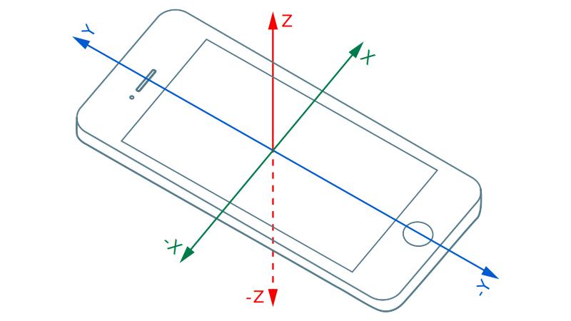
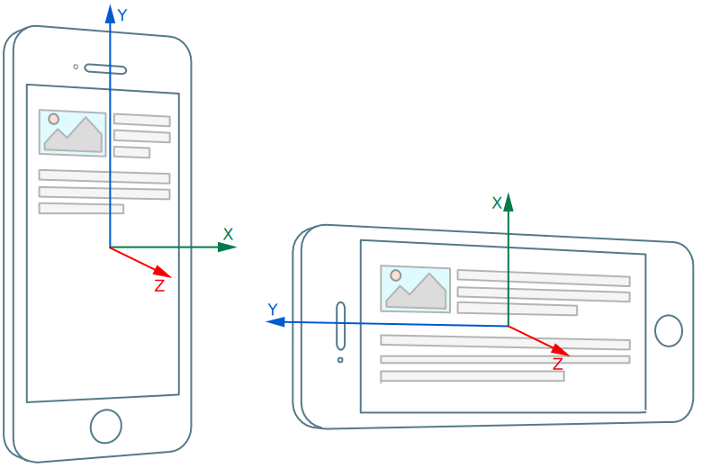
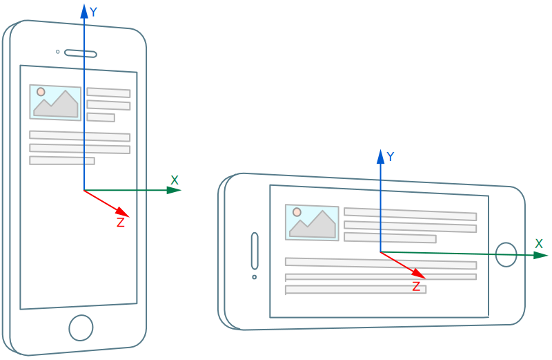

1. Introduction
The Accelerometer, LinearAccelerationSensor and GravitySensor APIs extends the Generic Sensor API [GENERIC-SENSOR] interface to provide information about acceleration applied to device’s
X, Y and Z axis in local coordinate system defined by device.
2. Examples
let sensor = new Accelerometer(); sensor.start(); sensor.onreading = () => { console.log("Acceleration along X-axis: " + sensor.x); console.log("Acceleration along Y-axis: " + sensor.y); console.log("Acceleration along Z-axis: " + sensor.z); } sensor.onerror = event => console.log(event.error.name, event.error.message);
let sensor = new GravitySensor({frequency: 5, referenceFrame: "screen"}); sensor.onreading = () => { if (sensor.y >= 9.8) { console.log("Web page is perpendicular to the ground."); } } sensor.start();
const shakeThreshold = 25; let sensor = new LinearAccelerationSensor({frequency: 60}); sensor.addEventListener('reading', () => { if (sensor.x > shakeThreshold) { console.log("Shake detected."); } }); sensor.start();
3. Use Cases and Requirements
The use cases and requirements are listed in the Motion Sensors Explainer and Sensor use cases documents.
4. Security and Privacy Considerations
Sensor readings provided by inertial sensors, such as accelerometer, could be used by adversaries to exploit various security threats, for example, keylogging, location tracking, fingerprinting and user identifying.
Research papers published by security community, for instance, [KEYSTROKEDEFENSE], indicate that by throttling the frequency, risks of successful attacks are not fully eliminated, while throttling may greatly affect usefulness of a web application with legitimate reasons to use the sensors.
The [TOUCHSIGNATURES] and [ACCESSORY] research papers propose that implementations can provide visual indication when inertial sensors are in use and/or require explicit user consent to access sensor readings. These mitigation strategies complement the generic mitigations defined in the Generic Sensor API [GENERIC-SENSOR].
5. Model
The Accelerometer sensor type’s associated Sensor subclass is the Accelerometer class.
The Accelerometer has a default sensor, which is the device’s main accelerometer sensor.
The Accelerometer has an associated sensor permission name which is "accelerometer".
A latest reading for a Sensor of Accelerometer sensor type includes three entries whose keys are "x", "y", "z" and whose values contain device’s acceleration about the corresponding axes. Values can contain also device’s linear acceleration or gravity depending on which object was instantiated.
The acceleration is the rate of change of velocity of a device with respect to time. Its unit is the metre per second squared (m/s2) [SI].
The frame of reference for the acceleration measurement must be inertial, such as, the device in free fall would provide 0 (m/s2) acceleration value for each axis.
The sign of the acceleration values must be according to the right-hand convention in a local coordinate system (see figure below).

The LinearAccelerationSensor class is an Accelerometer's subclass. The LinearAccelerationSensor's latest reading contains device’s linear acceleration about the corresponding axes.
The linear acceleration is an acceleration that is applied to the device that hosts the sensor, without the contribution of a gravity force.
The GravitySensor class is an Accelerometer's subclass. The GravitySensor's latest reading contains device’s acceleration due to the effect of gravity force about the corresponding axes.
The gravity is a force that attracts an object to the center of the earth, or towards any other physical object having mass.
5.1. Reference Frame
The local coordinate system represents the reference frame for the Accelerometer, LinearAccelerationSensor, and the GravitySensor readings. It can be either the device coordinate system or the screen coordinate system.
The device coordinate system is defined as a three dimensional Cartesian coordinate system (x, y, z), which is bound to the physical device. For devices with a display, the origin of the device coordinate system is the center of the device display. If the device is held in its default position, the Y-axis points towards the top of the display, the X-axis points towards the right of the display and Z-axis is the vector product of X and Y axes and it points outwards from the display, and towards the viewer. The device coordinate system remains stationary regardless of the dom screen orientation (see figure below).

The screen coordinate system is defined as a three dimensional Cartesian coordinate system (x, y, z), which is bound to the dom screen. The origin of the screen coordinate system in the center of the dom screen. The Y-axis always points towards the top of the dom screen, the X-axis points towards the right of the dom screen and Z-axis is the vector product of X and Y axes and it and it points outwards from the dom screen, and towards the viewer (see figure below).

The main difference between the device coordinate system and the screen coordinate system, is that the screen coordinate system always follows the dom screen orientation, i.e. it will swap X and Y axes in relation to the device if the current orientation type changes. In contrast, the device coordinate system will always remain stationary relative to the device.
6. API
6.1. The Accelerometer Interface
[Constructor(optional AccelerometerSensorOptionsoptions), SecureContext, Exposed=Window] interfaceAccelerometer: Sensor { readonly attribute double?x; readonly attribute double?y; readonly attribute double?z; }; enumAccelerometerLocalCoordinateSystem{"device","screen"}; dictionaryAccelerometerSensorOptions: SensorOptions { AccelerometerLocalCoordinateSystemreferenceFrame= "device"; };
To construct an Accelerometer object the user agent must invoke
the construct an accelerometer object abstract operation for the Accelerometer interface.
Supported sensor options for Accelerometer are "frequency" and "referenceFrame".
6.1.1. Accelerometer.x
The x attribute of the Accelerometer interface returns the result of invoking get value from latest reading with this and "x" as arguments. It represents the acceleration along x-axis.
6.1.2. Accelerometer.y
The y attribute of the Accelerometer interface returns the result of invoking get value from latest reading with this and "y" as arguments. It represents the acceleration along y-axis.
6.1.3. Accelerometer.z
The z attribute of the Accelerometer interface returns the result of invoking get value from latest reading with this and "z" as arguments. It represents the acceleration along z-axis.
6.2. The LinearAccelerationSensor Interface
[Constructor(optional AccelerometerSensorOptionsoptions), SecureContext, Exposed=Window] interfaceLinearAccelerationSensor: Accelerometer { };
To construct a LinearAccelerationSensor object the user agent must invoke
the construct an accelerometer object abstract operation for the LinearAccelerationSensor interface.
Supported sensor options for LinearAccelerationSensor are "frequency" and "referenceFrame".
6.2.1. LinearAccelerationSensor.x
The x attribute of the LinearAccelerationSensor interface returns the result of invoking get value from latest reading with this and "x" as arguments. It represents the linear acceleration along x-axis.
6.2.2. LinearAccelerationSensor.y
The y attribute of the LinearAccelerationSensor interface returns the result of invoking get value from latest reading with this and "y" as arguments. It represents the linear acceleration along y-axis.
6.2.3. LinearAccelerationSensor.z
The z attribute of the LinearAccelerationSensor interface returns the result of invoking get value from latest reading with this and "z" as arguments. It represents the linear acceleration along z-axis.
6.3. The GravitySensor Interface
[Constructor(optional AccelerometerSensorOptionsoptions), SecureContext, Exposed=Window] interfaceGravitySensor: Accelerometer { };
To construct a GravitySensor object the user agent must invoke
the construct an accelerometer object abstract operation for the GravitySensor interface.
Supported sensor options for GravitySensor are "frequency" and "referenceFrame".
6.3.1. GravitySensor.x
The x attribute of the GravitySensor interface returns the result of invoking get value from latest reading with this and "x" as arguments. It represents the effect of acceleration along x-axis due to gravity.
6.3.2. GravitySensor.y
The y attribute of the GravitySensor interface returns the result of invoking get value from latest reading with this and "y" as arguments. It represents the effect of acceleration along y-axis due to gravity.
6.3.3. GravitySensor.z
The z attribute of the GravitySensor interface returns the result of invoking get value from latest reading with this and "z" as arguments. It represents the effect of acceleration along z-axis due to gravity.
7. Abstract Operations
7.1. Construct an accelerometer object
- input
-
accelerometer_interface, an
Accelerometerinterface identifier or an interface identifier whose inherited interfaces containsAccelerometer.options, a
AccelerometerSensorOptionsobject. - output
-
An
Accelerometerobject.
-
Let allowed be the result of invoking check sensor policy-controlled features with Accelerometer.
-
If allowed is false, then:
-
Let accelerometer be a new instance of the interface identified by accelerometer_interface.
-
Invoke initialize a sensor object with accelerometer and options.
-
If options.
referenceFrameis "screen", then:-
Define local coordinate system for accelerometer as the screen coordinate system.
-
-
Otherwise, define local coordinate system for accelerometer as the device coordinate system.
-
Return accelerometer.
8. Acknowledgements
Tobie Langel for the work on Generic Sensor API.
9. Conformance
Conformance requirements are expressed with a combination of descriptive assertions and RFC 2119 terminology. The key words "MUST", "MUST NOT", "REQUIRED", "SHALL", "SHALL NOT", "SHOULD", "SHOULD NOT", "RECOMMENDED", "MAY", and "OPTIONAL" in the normative parts of this document are to be interpreted as described in RFC 2119. However, for readability, these words do not appear in all uppercase letters in this specification.
All of the text of this specification is normative except sections explicitly marked as non-normative, examples, and notes. [RFC2119]
A conformant user agent must implement all the requirements listed in this specification that are applicable to user agents.
The IDL fragments in this specification must be interpreted as required for conforming IDL fragments, as described in the Web IDL specification. [WEBIDL]